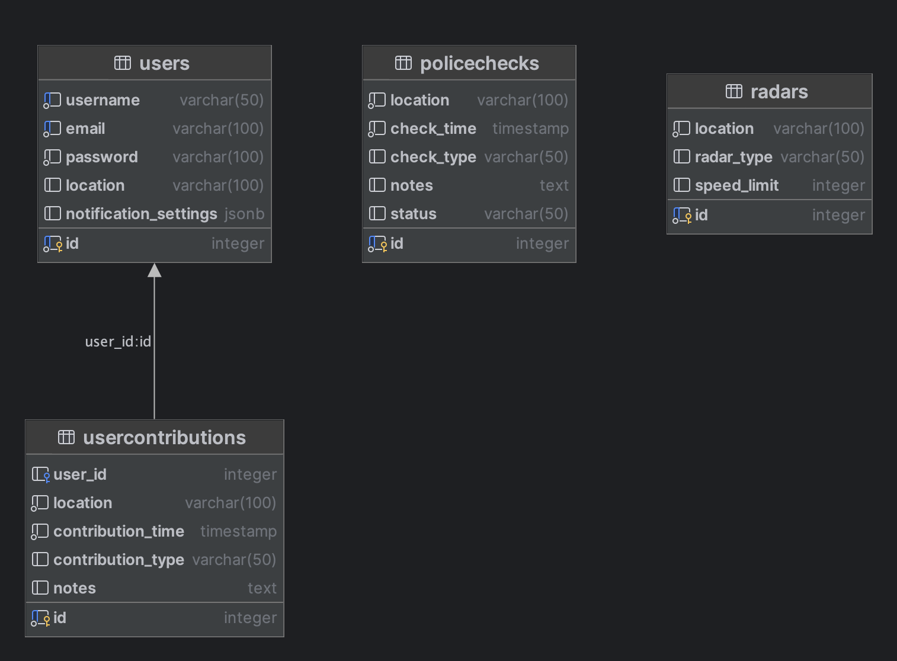

Podatkovni model
Sinhronizacija podatkov med napravo in strežnikom
Podatki o uporabnikih (uporabniško ime, e-pošta, nastavitve obveščanja) morajo biti shranjeni tako na strežniku kot
na napravi, da lahko aplikacija deluje tudi brez internetne povezave.
Obvestila o policijskih kontrolah in radarjih se lahko sinhronizirajo tako, da se posodobijo na napravi ob vsakem
zagonu aplikacije ali ob določenih intervalih, da se zagotovi ažurnost informacij.
Uporabniški prispevki se lahko sinhronizirajo na enak način kot obvestila o policijskih kontrolah in radarjih.
Spremembe v nastavitvah uporabnika (na primer dodajanje ali odstranjevanje radarjev) se morajo sinhronizirati med
napravo in strežnikom, ko uporabnik spremeni svoje nastavitve.
Entitete
Uporabnik:
- ID (primarni ključ)
- Uporabniško ime
- E-pošta
- Geslo
- Lokacija
- Nastavitve obveščanja (npr. preferirane območje obveščanja, nastavitve zasebnosti)
Obvestilo o policijski kontroli:
- ID (primarni ključ)
- Lokacija kontrole
- Čas kontrole
- Vrsta kontrole (npr. alkotest, hitrostna kontrola)
- Opombe
- Status (npr. potrjen, nedavno opažen)
Radar
- ID (primarni ključ)
- Lokacija radarja
- Vrsta radarja (npr. fiksni, mobilni)
- Omejitev hitrosti
Uporabniški prispevki
- ID (primarni ključ)
- Uporabnik (tuji ključ)
- Lokacija opažanja
- Čas opažanja
- Vrsta opažanja (npr. policijska kontrola, radar)
- Opombe
ER - Diagram
